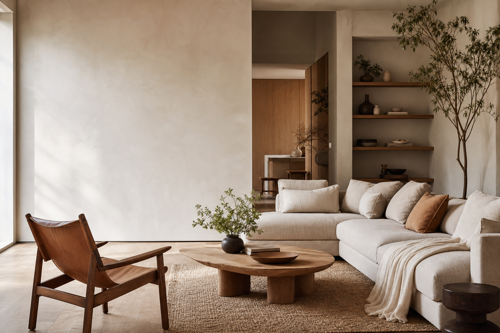
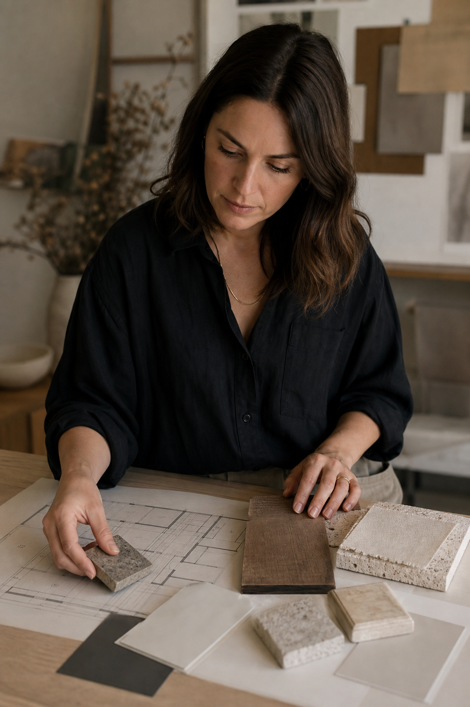

Room reset
For a room that is nearly there but still not working. We bring focus to layout, colour, lighting, and the pieces worth keeping.
Ask about a room reset →Homes with a point of view
Morrow Studio shapes thoughtful homes for people ready to make the big decisions feel clear, personal, and enjoyable.
Residential interiors · renovations · furnishing

A better brief starts here
Bring the questions, half-formed ideas, and practical constraints. We turn them into a coherent room-by-room direction.
How we can help
For a room that is nearly there but still not working. We bring focus to layout, colour, lighting, and the pieces worth keeping.
Ask about a room reset →Material choices, kitchen and bathroom direction, joinery, lighting, and a steady hand through the big decisions.
Plan a renovation →A layered, liveable interior from first concept through sourcing, delivery, and the final details.
Discuss a full home →Start with feeling, finish with detail
We combine the useful stuff, like dimensions and lead times, with the atmosphere that makes a home feel like yours.

Working together
We talk through the house, the people in it, your budget range, and what is no longer working.
You receive a cohesive concept with the materials, layout, and decisions that move the project forward.
We coordinate choices and sourcing so the home comes together without becoming a second job.
Your home is the brief
Send a short note about your home, where you are in the process, and the rooms on your mind. We will reply with the right next conversation.
Morrow Studio
Residential interiors in Amsterdam and beyond
hello@morrowstudio.example
+31 20 555 0156